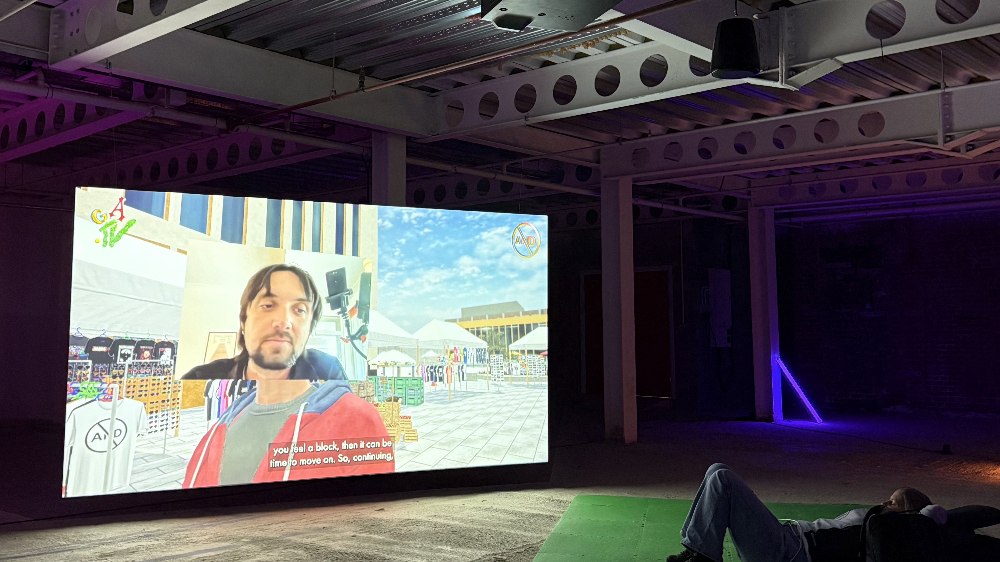
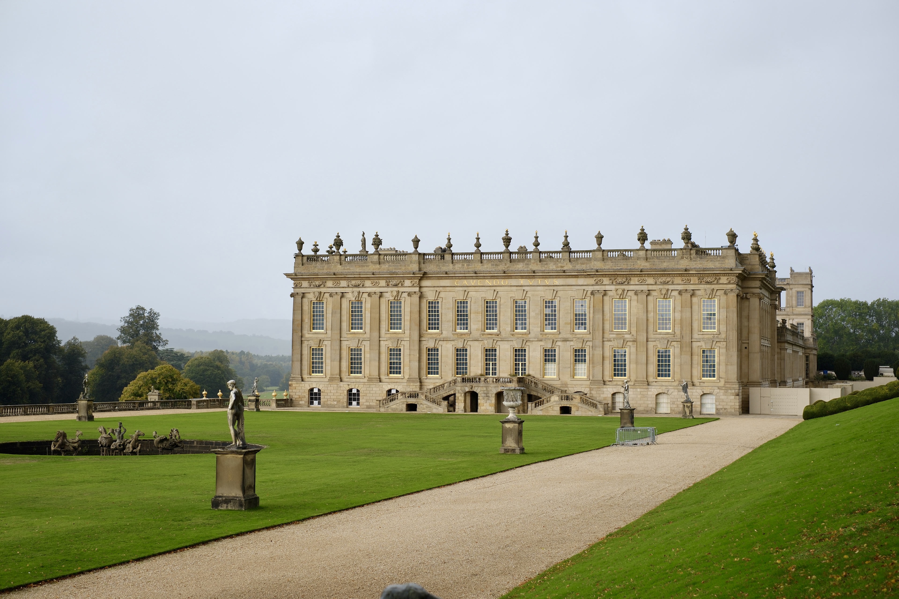

Barnsley
A little record of my time in Barnsley. Places I wandered, things I noticed, and memories I want to keep from this part of my UK journey.
Hi, I'm Eliora. I studied Product and Interaction Design as an undergraduate, and I'm looking forward to studying Digital Media Technology in Leeds to explore new interests and broaden my future career possibilities. This website is my little corner of the internet to record places I visit, everyday life in the UK, and the coursework and creative projects I work on along the way. It's a journey in progress, one memory at a time.

A little record of my time in Barnsley. Places I wandered, things I noticed, and memories I want to keep from this part of my UK journey.

A day at the place many people associate with Mr Darcy and Pemberley. A few photos, beautiful scenery, and impressions from my visit.

A growing collection of assignments, study notes, design experiments, and ideas from my learning journey in digital media and design.

The everyday rhythm of studying in the UK: classes, deadlines, study sessions, new experiences, and small achievements worth remembering.

Coffee stops, meals, walks, rainy afternoons, and ordinary days that deserve a place in my diary.

A little wish list of places I hope to explore next. I'll add new destinations, photos, and travel stories as my year in the UK unfolds.
A space to document my learning journey, reflect on course feedback, and track my progress throughout the semester. Through weekly reflections, I hope to better understand what I've learned, identify areas for improvement, and explore how feedback can help me develop my ideas and coursework.